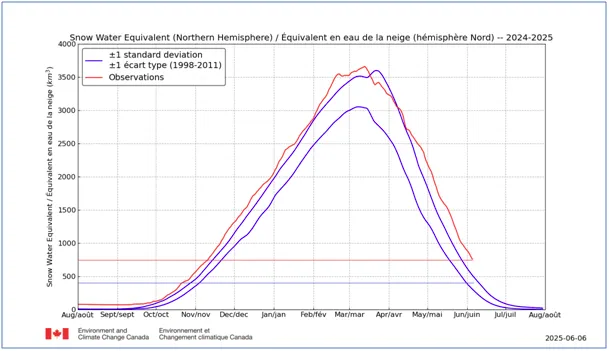
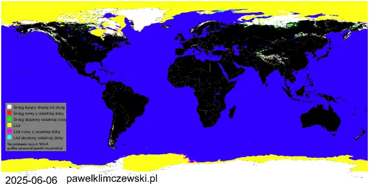

Jak w czerwcu czytać wykresy ze śniegiem i o tym jak to dinozaury ognia się nie bały…
Dziś tylko jeden dobrze nam znany wykres, ale przyjrzymy mu się dokładniej. Wykres obrazuje ilość wody uwięzionej w śniegu na półkuli północnej. Na czerwono mamy stan obecny i historię ostatniego roku, linie niebieskie wyznaczają typowy zakres zmian z lat ubiegłych. Nie mam pojęcia dlaczego okres referencyjny to lata 1998-2011, a nie lata ostatnie. Tak ostatnio robią "naukowcy" chyba, aby po ich publikacjach było więcej pytań niż odpowiedzi.

Do oryginalnego wykresu dodałem linie poziome, aby poprawnie odczytać wartości. O ile obecnie mamy 750 jednostek to typowy poziom o tej porze roku to 450 jednostek. 750/450 daje 1,67, czyli mamy 67 % śniegu więcej niż zwykle. Mapka kolorem białym pokazuje, gdzie ten śnieg jest.

67% to bardzo dużo, warto zadać sobie trochę trudu i przeliczyć wykres, bo jak sami widzicie na pierwszy rzut oka wykres tylko "trochę" odstaje od normy wieloletniej. Wiemy też, że obszary pod śniegiem są zbliżone do typowych, zatem nasuwa się prosty wniosek, że pokrywa śnieżna jest o 67% grubsza niż zwykle. W poprzednich dwóch latach było analogicznie i śnieg nie stopniał całkiem, a już od sierpnia nie tylko w Arktyce, ale i w wielu pasmach górskich na stary śnieg zacznie padać nowy, tworząc coraz grubsze obszary całorocznej zmarzliny, a na stokach gór zsuwające się lodowce. Lodowce pod wpływem grawitacji zsuwają się w doliny i tam topnieją, a jeśli się kurczą to z braku opadów wysoko w górach a nie od ciepła, ponieważ tam, gdzie powstają cały rok jest mróz. Czyli paradoksalnie w Alpach lodowce znikają z powodu ochłodzenia się Atlantyku i spadku ilości opadów w Europie. Więcej o tym tu: https://pawelklimczewski.pl/2024/11/23/lodowce-topi-grawitacja/
Dla nowych czytelników informacja, że od dwóch lat, gdy obserwuję te dane, na przełomie sezonów, czyli po pierwszym sierpnia zalegający śnieg jest usuwany z wykresu i nowy sezon pomiarowy liczony jest od prawie zera. Opis tu: https://pawelklimczewski.pl/2024/08/15/cud-znikajacego-sniegu/
W tak to prosty sposób świat nie jest informowany, że w trakcie "globalnego ocieplenia" olbrzymie obszary stają się z roku na rok pokrywane coraz grubszą warstwą śniegu. Największe przyrosty notujemy na szczęście na Grenlandii, na której biała czapa rośnie już od 11 000 lat, tj. od końca epoki lodowcowej. Podczas tej epoki klimat na północy był bardzo suchy i opady były rzadkością. A potem to już wiecie: "ludzie jaskiniowi palili za dużo ognisk, nakopcili i planeta się rozgrzała... " Premier polskiego rządu nawet powiedziała, że Ci ludzie wtedy kamieniami odstraszali dinozaury, widać ognia się nie bały.
Paweł Klimczewski